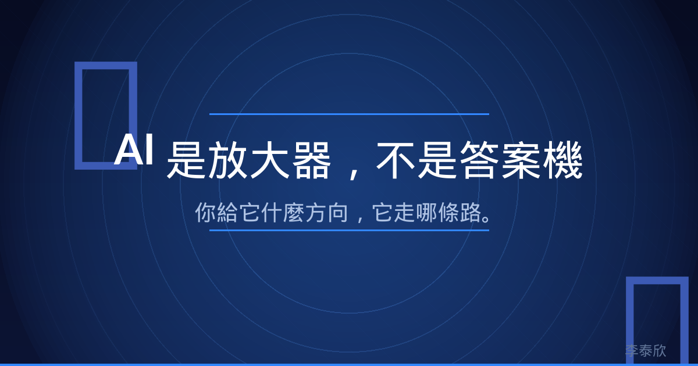
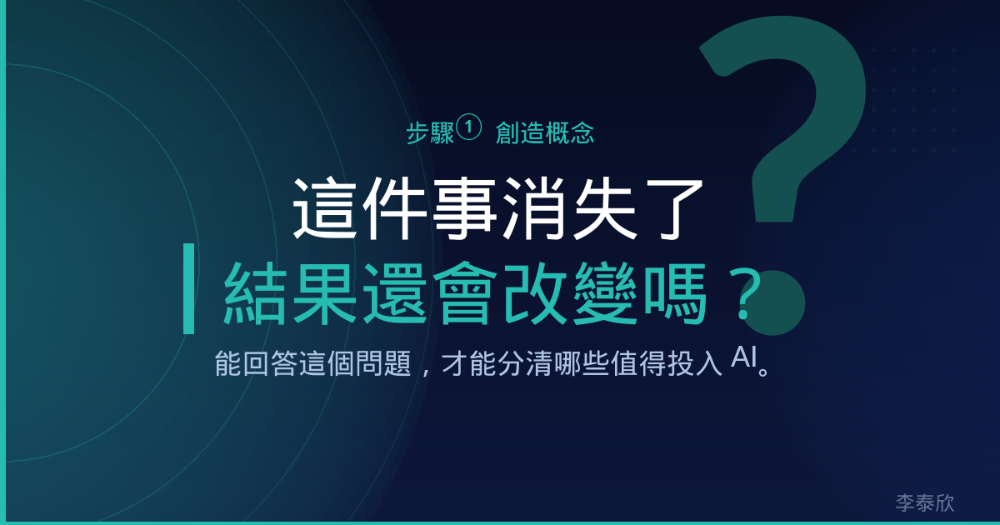
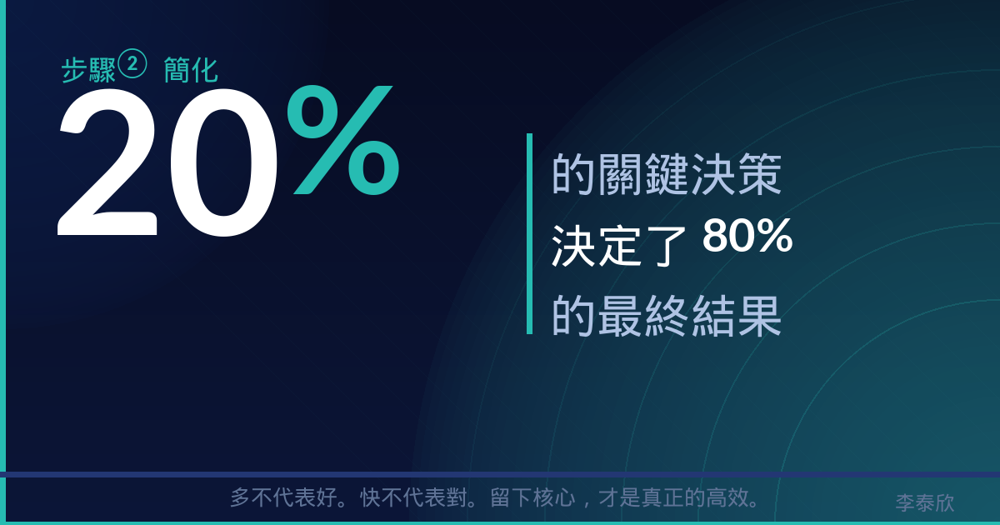
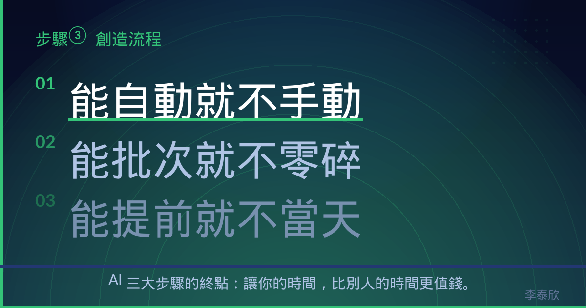

每個人都覺得AI不好用，但原因不是你想的那個
「AI 給的答案聽起來很美，但完全用不上。」
這句話，我說過。你大概也說過。
剛開始接觸 AI 的時候，我的使用方式很直覺：問它問題，然後等答案。
我問它「幫我寫一封開發客戶的信」，它給我一封措辭得體的信。我問它「幫我想一個貼文主題」，它給我十個主題。
每次看到答案，感覺非常充實。但每次想要實際用上，就會卡住。寫出來的信，對方不回；想出來的主題，貼出去沒人看。
我開始懷疑：是 AI 太差？還是我用法不對？
後來我才發現，問題既不是 AI，也不是用法，而是我的問題本身就問錯了。

AI 不是答案機，是放大器
很多人以為使用 AI 就是「輸入問題、得到答案」，這是最表面的理解。更精準的說法是：
AI 是你腦袋架構的放大器。
你的思維清晰，它幫你快速執行清晰的邏輯。你的思維混亂，它幫你快速生產混亂的輸出。
就像 GPS 導航。你把目的地設錯了，導航系統再精準也只能帶你去錯的地方。問題的核心是：在問 AI 之前，你有沒有先想清楚自己要什麼？
大多數人沒有。
心理學有個概念叫「達克效應」，一個人對某個領域越無知，越不知道自己有多無知。用 AI 時，我們以為自己已經提出了好問題，但其實我們連好問題長什麼樣子都不知道。
這就是真正的問題所在。

真正的核心能力：判斷力
如果提示詞技術不是使用 AI 的核心，什麼才是？是判斷力。
在問 AI 之前，你能不能判斷：
我真正想解決的問題是什麼？什麼是這個問題的關鍵輸入？AI 應該給我什麼格式的答案？
這三個判斷，決定了你能不能用出好的結果。
判斷力不是天生的，它來自你腦袋裡有沒有清晰的架構。就像打仗，你腦袋裡的地圖越詳細，你才知道部隊要往哪個方向走。
這就是我說的「AI 三大步驟」。
第一步：創造概念
核心任務：把複雜的事情拆細，分清楚訊號和雜訊。
大多數人在使用 AI 之前，腦袋是一鍋粥的狀態。想說很多，但說不清楚；需求很多，但不知道哪個重要。
創造概念這個步驟，就是要把那鍋粥裡的所有東西一一撈出來，攤在桌上，逐一檢查。
實際做法：先把你要做的事情拆到最小單位，條列出每一個細節。然後對每個細節問自己：「如果這件事情消失了，結果會改變嗎？」
答案是「會」的，是訊號。答案是「不會」的，是雜訊。
這個步驟很多人跳過，直接進入解決方案。然後覺得奇怪，為什麼做了那麼多事情，還是看不到成果。那是因為你在用力做雜訊，而不是在解決訊號。

第二步：簡化
核心任務：在所有訊號中，找到共通性，留下核心可用的部分。
當你把所有訊號列出來，你會發現它們之間有某種共同屬性。
例如你要改善銷售流程，你列出了十件要做的事。其中七件其實指向同一個問題：客戶在特定環節失去信任。你只要解決那個環節，其他的問題就自動解決了。
這就是 80/20 法則的實際意義：20% 的關鍵輸入，決定了 80% 的結果。
簡化的能力，讓你不是什麼都做，而是做對的事。
問 AI 之前，你能不能簡化到：一個核心問題、三個關鍵要素、一個清晰的方向？能做到這一點，你問出來的問題就已經贏了大多數人。
第三步：創造流程
核心任務：把留下來的核心內容排序，從最重要的開始，建立可以反覆執行的自動化架構。
有了清晰的概念，有了簡化的訊號，最後一步是把它們變成一套流程。
不是靠記憶力，每次都重新思考一遍。而是把思維固化成一個可以重複執行的 SOP。
使用 AI 的最高境界，不是每次都從零開始問它問題。而是你已經有一套流程，AI 在這套流程裡扮演一個特定的角色，自動幫你完成特定的步驟。
這就是「架構的能力」。架構，是你把複雜的事情組織成有序執行序列的能力。有了架構，你才能真正做到：
能自動就不要手動能批次就不要零碎能提前就不要當天

三大步驟的順序不能錯
為什麼是這個順序？
因為創造概念是原料，簡化是篩選，創造流程是組裝。你不能跳過任何一步。
你沒有概念，簡化就是瞎猜。你沒有簡化，流程就是把雜訊自動化（這比沒有自動化更糟糕）。你沒有流程，概念和簡化只是紙上談兵。
先建立架構，才能分辨什麼是訊號跟雜訊，最後才會輸出有價值的東西。這不只是使用 AI 的邏輯，是任何工作都適用的底層思維。
AI 給你的，是執行力。架構，還是你自己要先建好的。
把話講到對方願意行動，是結構，不是運氣。
你覺得三大步驟中，自己目前最卡在哪一關？
👇 留言 333，把 AI 三大步驟完整版私訊給你。
Instagram：eintaixin
個人官網